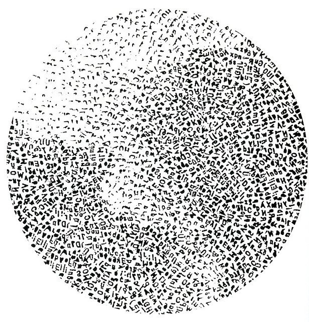
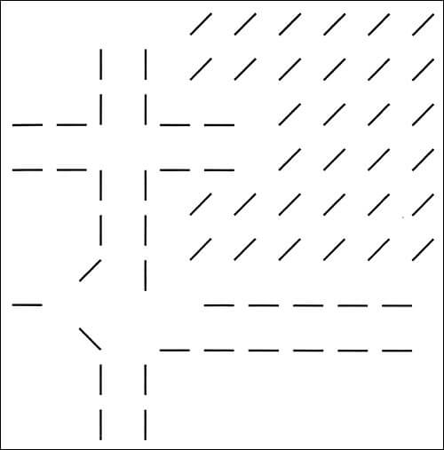
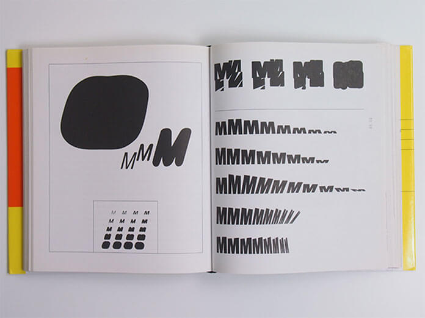
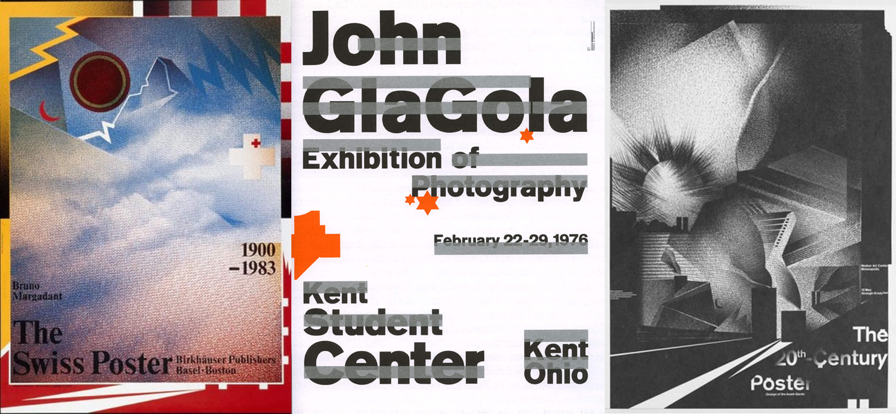

Introduction
Wolfgang Weingart is known by many as a typographer, a graphic designer, a rebel, an “enfant terrible”, the father of “New Wave” typography and a teacher. He is certainly known for his departure from traditional Swiss typography, having once said, “I took Swiss Typography as my starting point, but then I blew it apart, never forcing any style on my students”. In this essay, I will go on a journey through Weingart’s life to try and discover if he is, what he is known as, and to show some of his great work.
“By itself, typography is as boring as hell. What makes it exciting is how you interpret it”.
Early Years
Wolfgang Weingart was born in 1941, in the Salem Valley, Germany close to the border with Switzerland. An only child, his parents were both doctors. His mother worked in rural areas and his father for the diplomatic services, which involved travels to Africa and the Middle East. Weingart accompanied his parents on many of their travels.
In 1948, he moved into Castle Salem where his mother became a doctor to the aristocracy. In total, he spent 13 years here which played a significant factor in shaping his life. He not only experienced the beauty and freedom of the valley, but also the last years of WW2; the attacks, fuel rationing, and food shortages. Despite these hardships, Weingart describes his childhood as almost idyllic, surrounded by people who were kind, hardworking and above all, who had “a deep affinity with the earth”.
“These years are made of dreams and feelings only a child can experience”.
Education
In 1947 Weingart started school, but it was apparent from this young age, that he wasn't particularly interested in anything academic. He struggled with written work and in order to succeed, he devised ways of cheating. This included drilling holes in his desktop to read answers he had hidden below. Was this the start off his rebellious nature? Every school report was negative and he never felt as though he fitted in. It was during these years that his independence started and as he says, “explains why I resorted to the challenge of competing with myself”.
It was at this time that Weingart took a great interest the making things with his hands. One of these things was a girl’s bicycle that he owned. After school, he loved to take it apart, play with the parts, remodel them and put it back together. He learned through his hands and this was an important discovery in his life, “that intellect can be expressed and cultivated through handwork”.
In 1954, he moved to Lisbon, Portugal for two years, aged 13. Here he experienced an alternative education and was greatly influenced by his parents. He accompanied them on many trips during school holidays visiting places such as, Tangiers and Spain, gaining great cultural and visual experiences. He soaked it all up; the colours, the landscapes, the people and the architecture. These were experiences we would again see in his work and designs later in his life. These two years at a German school were important because an art teacher recognised his artistic talent and gave him private lessons. His mother at the same time was worried about his lack of interest in academic subjects. She decided to get him into the Merz Academy in Stuttgart, Germany. Here aged 17, he started a course, learning the art of production by designing and sketching designs for linoleum and woodcuts, hand setting type and printing.
Even at this stage, Weingart wasn't sure of what he wanted to do for a career but he felt he was moving in the right direction. He wasn't spoon fed at this school but naively thought that good design resulted for using the proper instruments such as good brushes, scissors, precise rulers etc. During his spare time, he worked on projects he devised himself and was allowed to use the school facilities to set type and print letterheads, invoices and student cards under the watchful eye of the head of letterpress. This experience was invaluable to him in his later years when he went to study typography at the Basel School of Design.
“The simpler the assignment, the more difficult the solution.”
Apprenticeships
In 1960 Weingart started a typesetting apprenticeship at the Basel School of Design, Switzerland unaware that this profession would undergo great changes in the near future. As Weingart stated in his book, “My Way to Typography”, this training was thorough and disciplined and the respect an awe he developed for each letter and typeset line “was confirmation that his calling has been answered."
At this time Swiss typography was becoming well known with great names such as; Josef Muller-Brockmann, Hofmann, Emile Ruder and Odermatt. It is based on mathematical grids which are clear cut, organised and easy to use when lying out text and images. Other features of this typography are sans serif text, asymmetrical layouts, and photography rather than drawings. It is simple, structured, minimalistic and uniform and it creates a great impact as it is easily read and understood. This typography also inspired Weingart and he decided to model his work on it and the ideas behind it.
At Basel, Weingart was introduced to Karl-August Hank who allowed him to compose type for him according to his designs, sketches and as a result, he was taught the techniques and theories of typography. It was at this time there was a change from the old ideas of metal typesetting and letterpress to the new ideas of printing technology which ultimately were creating change in graphic design. Weingart, deeply interested in his apprenticeship, got the keys of Ruwe Printing and worked there at weekends. In his room, he made lino and woodcut illustrations, inspired by the German artist, Hap Grieshaber.
“Anyone who uses Helvetica knows nothing about typefaces.”
Work
As Weingart learned the techniques of letterpress printing, his work with typography became more experimental which led to some well-known projects and works. One of these was his “Round Compositions”, which came about as the result of a lucky accident. One day he dropped a drawer full of heavy type and scattered them over the floor. Rather than repacking them, he put them into a round cardboard ring, in no particular order but facing upwards. This gave him two printable surfaces, one on the top with the letters and one underneath; the part not intended to print. This lead to a lot of experimentation and here we see Weingart starting to push the boundaries of typography graphically, yet retaining its meaning.

In 1963, after his apprenticeship, he applied to become a student of Hofmann in Basel. Looking through his portfolio, Hofmann was amazed at how great his work was and invited him to be a teacher, however, that didn't happen until 1968. It was at this time we see another example of his great work; “Line Pictures”. Starting as a student in 1964 in Basel and taught by Hofmann and Ruder, he was given his first basic "line" exercise. Instead of using the ruling pens that he was asked to use, he designed a device to make lines. On a piece of wood, he screwed in “L” shaped hooks at different angles and heights. When inked, this resulted in amazing images which were different. He continued with these line compositions progressing onto curved lines. He got a lot of inspiration for these and his round compositions from his travels to places such as Palmyra in Syria and temple ruins in Baalbek in Lebanon.

However, many lecturers thought he was simply rebellious not following the Swiss typography he was being taught, giving him the ultimatum to either commit or leave. So he decided to go back and work on a project he had started a few years earlier. This was known as the “M Project”, centred on the letter “M”. Weingart loved its shape, the points, the angles and its symmetry. He stretched, repeated, angled it, printed and pasted it onto a cube. He began to experiment with photographic reproduction and the repro camera. By photographing the letter M and repeating it over and over again, he made many abstract compositions and compilations, usually in black and white. The compositions reminded him of large scale wall murals of India.

Weingart also designed many posters during his working life. He loved to use photo montages and image layering to create tones and shapes. He experimented with deconstructed and stretched text on them and his compilations, despite having a Swiss style, were certainly different and unique. These have been displayed in galleries and exhibitions all over the world.
“What's the use of being legible, when nothing inspires you to take notice of it?”

Teaching
Between 1966 and 1968 Weingart worked as a typesetter in Basel, but never thought of becoming a teacher. Despite thinking of other careers, one thing always came back into his mind and that was how Swiss typography could change. He had the feeling that, “the time had come to breathe new life into such a rational form of typography, but could not imagine in what context”. In 1968, he became a teacher to 7 students in Basel. He developed a special curriculum for his typography course and his students worked closely with him, learning from his posters and his thirst for new designs. His teaching, unlike Ruder’s, wasn't based on clarity, order etc. He taught them to explore new possibilities, to push the boundaries and use their imagination to be creative. He distorted words, stretched them, enlarged them and pasted them together. He believed that one only needed to use four typefaces. His students misunderstood his teaching as his own style and spread it around as “Weingart style”. This is known now as “New Wave Typography”. His critics thought the typography was unreadable and would never be used. With digital technology in the 1970’s, a whole new world opened up. In the 1980’s some of his students took his ideas back to the US and started to incorporate them into graphic designs and as a result, it became a commercial success.
With the invention of computers, graphic design started to move in a new direction, but Weingart was never a fan. That’s why his students never designed on the computer. They were made to do it by hand, the belief being: the only way to break the rules is to know them. He felt the impact of digital technology was destroying the way we express ourselves, restricting creativity. He retired from teaching in 2005 but continued to give lectures all over the world.
“Electronic equipment replaces neither Eyes, Hands, nor Heart.”
Conclusion
So Weingart has been known as a typographer, a graphic designer, the father of “New Wave” typography, a teacher, an “enfant terrible” and a rebel. His vision was to breathe life into Swiss typography as it had become “sterile and anonymous”. As he experimented with size, weight and letter spacing of text and tested the limits of readability, “his students picked it up a so-called Weingart style…. and it spread around”. Hence, he became known as the father of “New Wave Typography”. He was certainly a typographer and a designer from his records, pointing out the typography has the “duty of conveying information in writing”. Its purpose was to be readable and if wasn't, it served no purpose. He was a teacher, passing on his knowledge to many students in Basel. He was “an enfant terrible” of Swiss typography as he broke the rules and “freed letters from the shackles of the grid” amongst other things. Lastly, a rebel is a title which I'm not sure he is deserving of. I would prefer to describe him as an innovator and a designer, or a revolutionary. He may have opposed Swiss typography, but he has changed the way the world receives information through visual communication and the way it approaches design and, for that, we give him international recognition.
“For me, typography is a triangular relationship between design idea, typographic elements, and printing technique” Wolfgang Weingart.
Bibliography
Books:
Weingart, Wolfgang. “My Way to Typography”, Baden: Muller Publishers, 2000
Websites:
Fidler Jennifer. Wolfgang Weingart: Biography, [online]. Available: htpp://jenniferfidler.com/images/wolfgangweingart.swf
http://www.swissdesignawards.ch/grandprix/2014/weingart/
Kelley Gregory. Wolfgang Weingart, [online]. Available: www.miracosta.edu/home/gkelley/Weingart.html
Oyama Kim: Wolfgang Weingart, [online]. Available:htpp://studiojunglecat.com/teaching/ad205-f12/category/
Tam Keith. Wolfgang Weingart’s typographic landscape, [online]. Available: http:// keithtam.net/writings/ww/ww.html
Top 6 Quotes by Wolfgang Weingart | A-Z Quotes, [online]. Available: http://www.azquotes.com/author/65433-Wolfgang_Weingart
Weingart Wolfgang. Biography, Designs and Facts, [online]. Available: www.famousgraphicdesigners.org/wolfgang-weingart
Weingart Wolfgang. Design is History, [online]. Available: http://www.designishistory.com/1960/wolfgang-weingart/
Weingart Wolfgang. How can one make Swiss Typography: First published 1972 in a photocopied edition of two hundred copies and distributed during a lecture tour of design schools throughout the United States. Reprinted in Octavo no.4 (London: 1987)
Weingart Wolfgang – OFFSET, [online]. Available: www.iloveoffset.com/wolfgang-weingart/
Weingart Wolfgang. Wikipedia, the free encyclopedia, [online]. Available: https://en.wikipedia.org/wiki/Wolfgang_Weingart
What is Swiss Style Typography? [online]. Available: http://www.1stwebdesigner.com/swiss-style-typography/